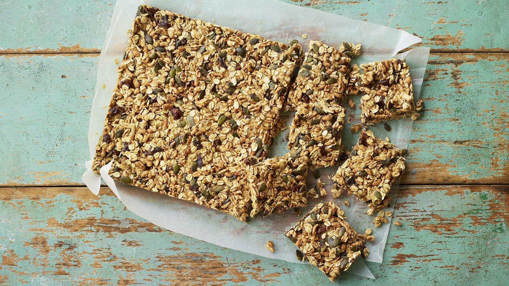
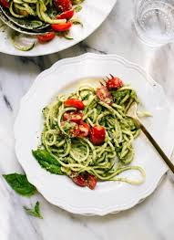
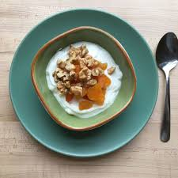

Avocado & Tuna Salad Bites
A refreshing, protein-packed bite!
×
Avocado & Tuna Salad Bites Recipe
Ingredients:
- 1 avocado, cubed
- 1 can of tuna, drained
- 1 tbsp olive oil
- 1 tsp lemon juice
- Salt and pepper to taste
- Fresh parsley for garnish
Instructions:
- In a bowl, combine the tuna, avocado, olive oil, lemon juice, salt, and pepper.
- Mix gently until combined.
- Spoon the salad onto small cucumber or cherry tomato slices for a fresh, bite-sized snack.
- Garnish with parsley.
Protein: 20g per serving

No-bake Fruity Oat Bars
Sweet, chewy, and packed with nutrients!
×
No-bake Fruity Oat Bars Recipe
Ingredients:
- 150g/5½oz peanut butter
- 150g/5½oz honey or agave syrup
- 2 tsp vanilla extract
- 200g/7oz porridge oats, gluten-free if required
- 50g/1¾oz brown puffed rice or puffed oats, gluten-free if required
- 75g/2½oz pumpkin seeds
- 125g/4½oz dates, roughly chopped
Instructions:
- In a saucepan, warm the peanut butter, honey, and vanilla extract over low heat until combined.
- In a large bowl, mix the oats, puffed rice, pumpkin seeds, and dates.
- Pour the warm peanut butter mixture over the dry ingredients and stir until fully coated.
- Press the mixture firmly into a lined baking dish and refrigerate for at least 2 hours.
- Cut into bars and enjoy!
Protein: 12g per serving

Zucchini Noodles with Pesto
A light, healthy, and refreshing snack!
×
Zucchini Noodles with Pesto Recipe
Ingredients:
- 2 zucchinis, spiralized into noodles
- 1/4 cup homemade or store-bought pesto
- 1 tbsp olive oil
- 1 tbsp pine nuts (optional)
- Parmesan cheese (optional)
Instructions:
- Heat olive oil in a pan and sauté zucchini noodles for 2-3 minutes until just tender.
- Stir in pesto and toss to coat evenly.
- Top with pine nuts and a sprinkle of Parmesan cheese if desired.
Protein: 5g per serving
Cauliflower Buffalo Bites
A spicy, crispy snack with a kick!
×
Cauliflower Buffalo Bites Recipe
Ingredients:
- 1 head cauliflower, cut into florets
- 1/2 cup whole wheat flour
- 1 cup water
- 1 tsp garlic powder
- 1 cup buffalo sauce
- Salt and pepper to taste
Instructions:
- Preheat the oven to 400°F (200°C).
- In a bowl, mix flour, water, garlic powder, salt, and pepper to make a batter.
- Dip cauliflower florets into the batter and place them on a baking sheet.
- Bake for 20 minutes, then toss in buffalo sauce and bake for an additional 10 minutes.
Protein: 6g per serving

Greek Yogurt with Berries & Nuts
A creamy, crunchy, and delicious snack!
×
Greek Yogurt with Berries & Nuts Recipe
Ingredients:
- 1 cup Greek yogurt
- 1/4 cup mixed berries (blueberries, strawberries, raspberries)
- 1 tbsp honey
- 2 tbsp chopped almonds or walnuts
Instructions:
- Place Greek yogurt in a bowl.
- Top with fresh berries and drizzle with honey.
- Sprinkle with chopped almonds or walnuts for extra crunch.
Protein: 15g per serving